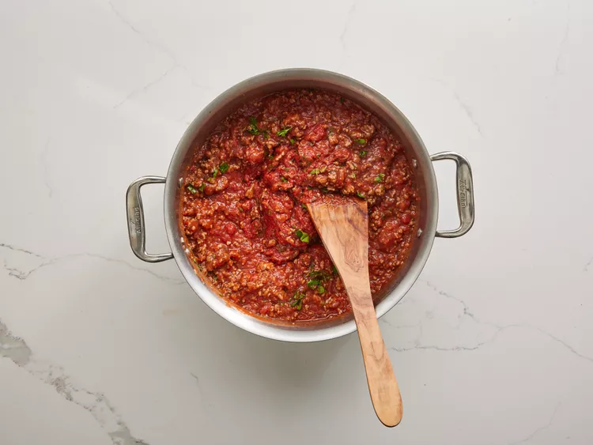
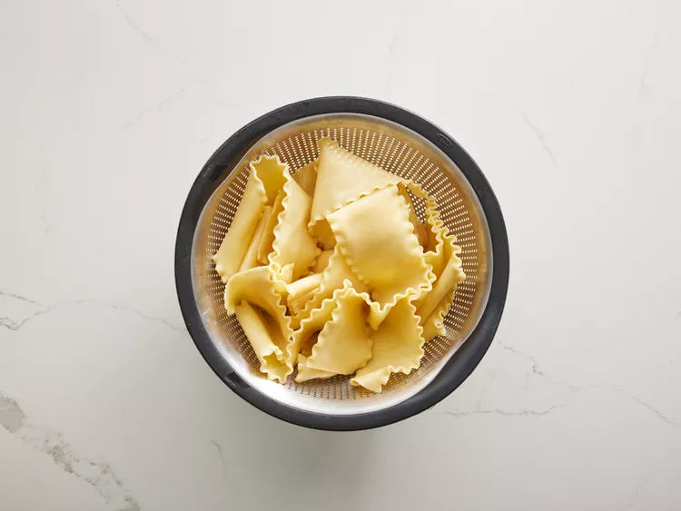
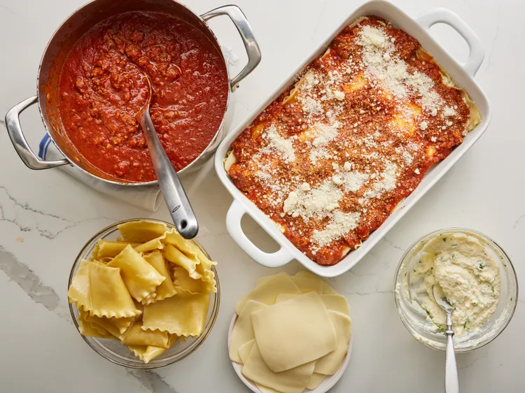
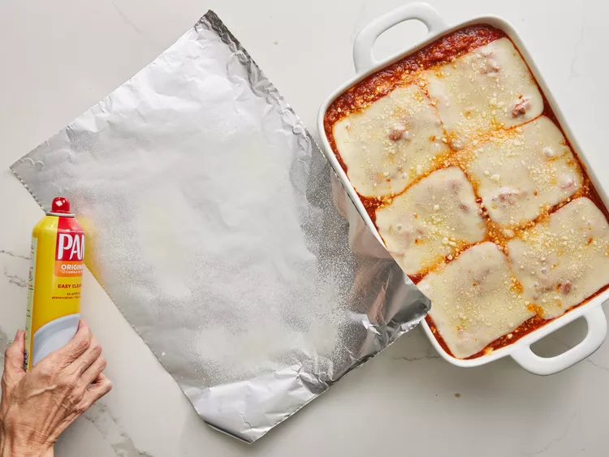
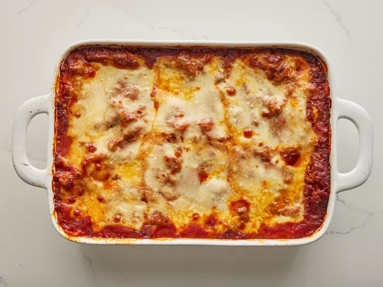

Lasagne Recipe
Home

World's Best Lasagna
This lasagna recipe takes a little work, but it is so satisfying and filling that it's worth it!
Ingrediant List:
- 1 pound sweet Italian sausage
- ¾ pound lean ground beef
- ½ cup minced onion
- 2 cloves garlic, crushed
- 1 (28 ounce) can crushed tomatoes
- 2 (6.5 ounce) cans canned tomato sauce
- 2 (6 ounce) cans tomato paste
- ½ cup water
- 2 tablespoons white sugar
- 4 tablespoons chopped fresh parsley, divided
- 1 ½ teaspoons dried basil leaves
- 1 ½ teaspoons salt, divided, or to taste
- 1 teaspoon Italian seasoning
- ½ teaspoon fennel seeds
- ¼ teaspoon ground black pepper
- 12 lasagna noodles
- 16 ounces ricotta cheese
- 1 large egg
- ¾ pound mozzarella cheese, sliced
- ¾ cup grated Parmesan cheese
How to make it
- Step 1:
Gather all your ingredients.

- Step 2:
Cook sausage, ground beef, onion, and garlic in a Dutch oven over medium heat until well browned.

- Step 3:
Stir in crushed tomatoes, tomato sauce, tomato paste, and water. Season with sugar, 2 tablespoons parsley, basil, 1 teaspoon salt, Italian seasoning, fennel seeds, and pepper. Simmer, covered, for about 1 ½ hours, stirring occasionally.

- Step 4:
Bring a large pot of lightly salted water to a boil. Cook lasagna noodles in boiling water for 8 to 10 minutes. Drain noodles, and rinse with cold water.

- Step 5:
In a mixing bowl, combine ricotta cheese with egg, remaining 2 tablespoons parsley, and 1/2 teaspoon salt.

- Step 6:
Preheat the oven to 375 degrees F (190 degrees C).
- Step 7:
To assemble, spread 1 ½ cups of meat sauce in the bottom of a 9x13-inch baking dish. Arrange 6 noodles lengthwise over meat sauce, overlapping slightly. Spread with 1/2 of the ricotta cheese mixture. Top with 1/3 of the mozzarella cheese slices. Spoon 1 ½ cups meat sauce over mozzarella, and sprinkle with 1/4 cup Parmesan cheese.

-
Step 8:
Repeat layers, and top with remaining mozzarella and Parmesan cheese. Cover with foil: to prevent sticking, either spray foil with cooking spray or make sure the foil does not touch the cheese.

- Step 9:
Bake in the preheated oven for 25 minutes. Remove the foil and bake for an additional 25 minutes.

-
Step 10:
Let the lasagna rest at room temperature for about 15 minutes before cutting; this helps it set and firm up.
(No Picture here, because how it's shown at the top of the page how it should look like)